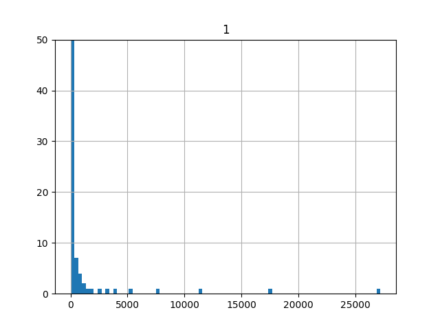
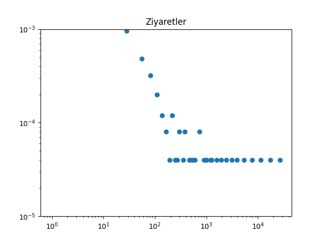
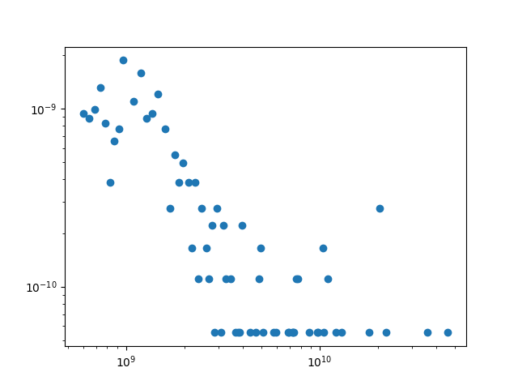
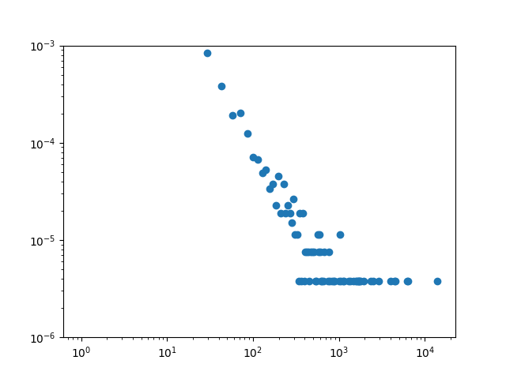
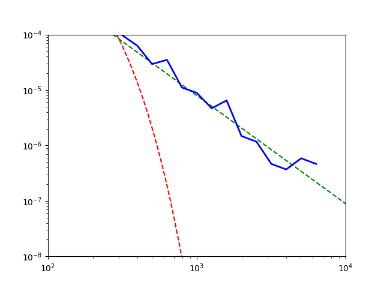

Bir web sitesini bir ayda ziyaret etmiş olan özgün kullanıcı sayısı üzerinden bir alarm programı yazmak gerekti diyelim. Eğer çok fazla kullanıcı var ise bir admin’e bir email gönderilecek.. Akla gelen çözümlerden aylık kullanıcı sayılarının ortalamasını alıp 2 ya da 3 standart sapma kadar olan cevapları aykırı değer (outlier) olarak kabul etmek ve bu durumlarda alarm çalmak [1, sf. 255]. Çünkü, eh, veri noktalarının yüzde 99.7’si 3 standart sapma içine düşer değil mi?
Burada gözardı edilen nokta şudur: verinin yüzde 99.7’si 3 standart sapma içine düşer eğer veri Gaussian olarak dağılmış ise. Ayrıca ortalama hesabı da problemli, burada ilk akla gelebilecek Merkezi Limit Teorisi üzerinden örneklem ortalaması gerçek ortalamaya yaklaşacağı, ki bu çoğu dağılım için doğrudur, fakat bazı dağılımlar üzerinde Merkezi Limit Teorisi işlemez! Güç Kanunları ile istatistik biliminin sınırlarına geliyoruz - gerçek dünyadan önümüze atılan veriler artık sıkça bir şekilde normal dışı verileri içerebiliyor, ve bu durumlara hazır olmamız lazım.
Üstte bahsettiğimiz senaryo için aslında elimizde veri var (pek çok ay için). Verinin histogramına bakalım,
import pandas as pd
dfvis=pd.read_csv('visits.csv',header=None,sep='\t',index_col=0)
visits = np.array(dfvis[1])dfvis.hist(bins=80)
plt.ylim([0,50])
plt.savefig('stat_powerlaw_05.png')
Görüldüğü gibi bazı değerlerden aşırı çok var, bazılarından neredeyse yok. Aşırı değerler her iki uçta da gözüküyor, büyük olanlardan daha az var, evet, ama oradaki yoğunluk dikkate alınmaz seviyede de değil. Bu arada eğer y eksenini ufaltmasaydık aşırı değerler haricinde kalan değerler üstteki kadar bile gözükmeyecekti.
Olasılık yoğunluk fonksiyonu (probability density function),
\[ p(x) = C x^{-\alpha} \]
\(C\) bir normalizasyon sabiti, ki \(\lambda > 0\) olmak üzere, dağılımın parametresi. Bu dağılıma üstel kanun (power law) ismi verilir. Zıpf, ya Pareto dağılımı üstteki formülün farklı şekilde temsilinden ibaret.
Her özgün \(\lambda\) farklı bir üstel kanuna işaret eder. Mesela \(p(x) = C/ x^2\) bir ustel kanun olabilir! Bildigimiz \(x^2\)’yi baz alan bir dağılımdan bahsediyoruz yani! \(\alpha > 1\) olmalıdır, sebebini altta göreceğiz. Doğadaki çoğu üstel kanun \(2 < \alpha < 3\) arasındadır. Beklentiyi hesaplayalım,
\[ E[X] = \int_{x_{min}}^{\infty} x p(x) \mathrm{d} x = C \int_{x_{min}}^{\infty} x ^{-\alpha + 1} \mathrm{d} x \]
\[ = \frac{C}{2-\alpha} \bigg[ x ^{-\alpha+2} \bigg]_{x_{min}}^{\infty} \]
Bu ifadenin \(\alpha \le 2\) için sonsuza gittiğine dikkat edelim, bahsettiğimiz gariplik burada… \(x_{min}\)’in ne olduğunu birazdan göreceğiz.
Log-Log Grafikleri
Üstel kanun dağılımlarının ilk kez histogram log-log skalasında grafiklenince keşfedildiği düşünülmektedir, bir üstel kanun sürecinden gelen veriyi anlamaya çalışırken hem \(p(x)\) hem \(x\)’in log’u alınmıştır, ve bu grafik negatif eğimli düz çizgi olarak ortaya çıkmıştır. Yani
\[ \ln p(x) = -\alpha \ln x + c \qquad (1) \]
Üstteki yaklaşımla grafiği nasıl oluşturuz? Bunun için
hist çağrısından histogram grafiğini değil, histogramdaki
kutucukların üç noktalarını düz veri olarak almamız lazım, ki bu
değerler \(x\) değerlerimizi
oluşturacak, sonra onların normalize edilmiş değerlerini almamız
gerekiyor [4], bu değerler de \(\ln
p(x)\) olacak. Grafiklemeden önce elle log almamıza gerek yok,
grafik rutinine skalayı log bazında ayarlamasını söylememiz yeterli,
xscale,yscale çağrıları ile bunu yapabiliriz.
def plot_power(data):
hst = plt.hist(data, normed=True,bins=1000)
f=plt.figure() # histogram halinden cik
x = hst[1][:-1]; y = hst[0]
plt.plot(x, y,'o')
plt.xscale('log')
plt.yscale('log')plot_power(visits)
plt.title('Ziyaretler')
plt.ylim(1e-5,1e-3)
plt.savefig('stat_powerlaw_04.png')
Düz çizgiye benzer bir şekil ortaya çıktı, negatif eğimli, demek ki bir üstel kanun mümkün.
Üstel kanunu yoğunluk formülüne nasıl erişiriz? Başlangıç önceden gösterdiğimiz formül olmak üzere,
\[ \ln p(x) = -\alpha \ln x + c \]
Eger \(\ln(c) = C\) dersek,
\[ \ln p(x) = -\alpha \ln x + \ln C \]
\[ = \ln C x^{-\alpha} \]
ve iki tarafı \(e\) üzerine alırsak,
\[ p(x) = C x^{-\alpha} \]
Olasılık yoğunluk fonksiyonuna eriştik.
\(x_{min}\) Hesabı
Dikkat edilirse \(C x^{-\alpha}\) fonksiyonu \(x \to 0\) iken sonsuza gidiyor (diverge), demek ki her \(x \ge 0\) için yoğunluk fonksiyonu geçerli değildir. O zaman üstel kanunun geçerli olduğu bir alt sınır olmalı. Bu alt sınıra \(x_{min}\) diyeceğiz.
Artık normalizasyon sabiti \(C\)’yi hesaplayabiliriz,
\[ \int_{x_{min}}^{\infty} C x^{-\alpha} = 1\]
\[ \frac{C}{(-\alpha+1) } \bigg[ x^{-\alpha+1} \bigg]_{x_{min}}^{\infty} = 1\]
\[ \frac{C}{(1-\alpha) } \bigg[ x^{-\alpha+1} \bigg]_{x_{min}}^{\infty} = 1\]
Görülebileceği üzere bu formül sadece \(\alpha > 1\) için anlamlıdır, diğer durumlarda sonsuzluğa gider. Demek ki üstel kanun dağılımı için \(\alpha > 1\) şartını da getirmemiz gerekiyor. Devam edelim,
\[ \frac{C}{(-\alpha+1) } x_{min}^{-\alpha+1} = 1\]
\[ C = (\alpha-1)x_{min}^{\alpha-1} \]
\(C\) ile beraber ve bazı düzeltmeler ardından \(p(x)\) bazen şöyle gösteriliyor [5],
\[ p(x) = \frac{\alpha-1}{x_{min}}\bigg( \frac{x}{x_{min}} \bigg)^{-\alpha} \]
\(\alpha,x_{min}\)’i Kestirmek (Estimation)
import statsmodels.formula.api as smf
hst = plt.hist(visits, normed=True,bins=1000)
visitx = hst[1][:-1];visity = hst[0]
yy = np.log(visity);xx = np.log(visitx)
yy = yy[visity>0];xx = xx[visity>0]
df = pd.DataFrame([yy,xx]).T
df.columns = [['y','x']]
results = smf.ols('y ~ x', data=df).fit()
print 'alpha', -1 * results.params[1]
print 'kesi', np.exp(results.params[0])alpha 0.540551473071
kesi 0.00241514844497Bu basit yöntemin, ne yazık ki, çok ciddi problemleri var. Bu metotun niye kullanılmaması gerektiği [3, sf. 31]’de bulunabilir.
Alternatif yöntem şöyle; önce \(\alpha\) için hızlı çalışan bir tahmin edici mevcut, bunu görelim; Maksimum olurluk üzerinden,
\[ p(x;\alpha) = \prod_{i=1}^{n} \frac{\alpha-1}{x_{min}} \bigg( \frac{x_i}{x_{min}}\bigg)^{-\alpha} \]
Maksimum log olurluk,
\[ \ln p(x;\alpha) = \ln \prod_{i=1}^{n} \frac{\alpha-1}{x_{min}} \bigg( \frac{x_i}{x_{min}}\bigg)^{-\alpha} \]
\[ = \sum_{i=1}^{n} \ln \frac{\alpha-1}{x_{min}} \bigg( \frac{x_i}{x_{min}}\bigg)^{-\alpha} \]
\[ = \sum_{i=1}^{n} \bigg[ \ln (\alpha-1) + \ln x_{min} - \alpha \ln \frac{x_i}{x_{min}} \bigg] \]
\[ = n \ln (\alpha-1) + n \ln x_{min} - \alpha \sum_{i=1}^{n} \ln \frac{x_i}{x_{min}} \]
Maksimum değer için \(\alpha\)’ya göre türevi alıp sıfıra eşitleriz ve çözeriz, \(\ln(\alpha-1)\)’in türevini hatırlayalım bu arada,
import sympy
alpha = sympy.symbols('alpha')
print sympy.diff(sympy.log(alpha-1))1/(alpha - 1)\[ = \frac{n}{(\alpha - 1)} - \sum_{i=1}^{n} \ln \frac{x_i}{x_{min}} = 0 \]
\[ \frac{n}{(\alpha - 1)} = \sum_{i=1}^{n} \ln \frac{x_i}{x_{min}} \]
\[ \frac{(\alpha - 1)}{n} = \bigg( \sum_{i=1}^{n} \ln \frac{x_i}{x_{min}} \bigg)^{-1} \]
\[ \hat{\alpha} = 1 + n \bigg( \sum_{i=1}^{n} \ln \frac{x_i}{x_{min}} \bigg)^{-1} \]
Fakat tahmin edicinin hesabı için \(x_{min}\)’i bilmek gerekiyor. Bir tavuk-yumurta problemi var, \(\hat{\alpha}\) için \(x_{min}\) gerekli, ama \(x_{min}\)’in kendisi de bilinmiyor.
O zaman üstteki tahmin ediciyi şöyle kullanırız; verideki her noktayı
potansiyel bir \(x_{min}\)’mis gibi
alırız (ve bu nokta altındaki hiçbir noktayı dikkate almayız, bu alt
sınırı bunun için seçtik), ve bu nokta için yukarıdaki formül ile \(\hat{\alpha}\)’yi hesaplarız, sonra elde
ettiğimiz \(x_{min}, \hat{\alpha}\)
ikilisini kullanarak (artık özgün bir üstel kanun dağılımımız var), bu
dağılım ile veri arasındaki uyum derecesini Kolmogorov-Şmirnov testi ile
hesaplarız. Elimizdeki \(n\) veri
noktası için \(n\) tane hesap elde
ederiz, ve raporlanan mesafeler arasından en ufak olanını seçeriz, ve bu
mesafeye tekabül eden \(x_{min},\hat{\alpha}\) ikilisini optimal
parametreler olarak seçeriz. Altta örneği gösterilen
powerlaw adlı paket [6] tam da bunu yapıyor. Ziyaret verisi
üzerinde işletelim,
import powerlaw
fitvis = powerlaw.Fit(visits, discrete=False)
print 'xmin', fitvis.xmin, 'alpha', fitvis.alphaxmin 34.0 alpha 1.57060706124Hesaplanan \(\alpha\) değerinin lineer regresyondan gelen hesaptan ne kadar farklı olduğuna dikkat!
powerlaw paketine, biraz önce yaptığı tahminler
üzerinden, üstel (exponential) dağılımın mı, üstel kanun dağılımının mı
(isimler birbirine çok benziyor doğru) bu veri için daha olası olduğunu
sorabiliriz, daha doğrusu her iki dağılım için Kolmogorov-Şmirnov
testini işletiriz,
print fitvis.exponential.KS()
print fitvis.power_law.KS()0.487151691713
0.0312634791749Üstel kanun görüldüğü gibi daha olası (p-değer 0.05 altında). Bir olasılık hesabını da elle yapalım,
x0 = 1e2
p = x0**-fitvis.alpha
C = (fitvis.alpha-1) * fitvis.xmin**(fitvis.alpha-1)
print p*C0.00308315744794Bazı farklı veriler üzerinde aynı hesapları görelim. Mesela 2003 senesindeki en zengin 300 Amerikalının net varlıklarının dağılımı.
import powerlaw
dfwl=pd.read_csv('wealth.dat',header=None)
wealth=np.array(dfwl)[:,0]
fitwl = powerlaw.Fit(wealth, discrete=True)
print 'xmin', fitwl.xmin, 'alpha', fitwl.alpha
print 'K-S testi', fitwl.power_law.KS()xmin 1100000000.0 alpha 2.40575306524
K-S testi 0.0432807151071plot_power(wealth)
plt.savefig('stat_powerlaw_03.png')
plt.hold(False)
Dikkat, çoğunlukla bu konularda araştırma yapanlar zengin, fakir herkesi kapsayan bir ölçüm üzerinden (bu konulara ilk bakan Pareto öyle yapmıştı) tüm kazancın üstel kanunu takip ettiğini söylerler, ki bu doğrudur. Üstteki sonuç, bunun üstüne, en zengin 400 kişinin kendi arasında bile üstel kanunun işlediğini söylemektedir. Yani zenginlik öyle dengesiz dağılan bir şeydir ki, en zengin 400 içinde çoğunluk en tepedekilere göre daha fakirdir!
Devam edelim: Herman Melville adlı yazarın ünlü Moby Dick romanındaki özgün kelimelerin kullanılma frekansının dağılımı,
import powerlaw
dfwords=pd.read_csv('words.txt',header=None)
words=np.array(dfwords)[:,0]
fitw = powerlaw.Fit(words, discrete=True)plot_power(words)
plt.ylim(1e-6,1e-3)
plt.savefig('stat_powerlaw_02.png')
Bu arada powerlaw paketinin bazı grafikleme özellikleri
de var. Veriyle beraber tahmin edilen \(-\alpha\) (düz çizgi olarak), üstel dağılım
(kırmızı çizgi) ve üstel kanun uyumunu aynı grafikte gösterebiliriz.
f = plt.figure()
fitw.power_law.plot_pdf(linestyle='--', color='g')
plt.hold(True)
fitw.exponential.plot_pdf(linestyle='--', color='r')
plt.hold(True)
fitw.plot_pdf(color='b', linewidth=2)
plt.xlim(1e2,1e4)
plt.ylim(1e-8,1e-4)
plt.savefig('stat_powerlaw_01.png')
plt.hold(False)
print 'Kolmogorov-Smirnov testi', fitw.power_law.KS()Kolmogorov-Smirnov testi 0.00922886388026Kaynaklar
[1] Janert, Data Analysis with Open Source Tools
[2] Shalizi, Advanced Data Analysis from an Elementary Point of View
[3] Causet, Power-Law Distributions in Empirical Data
[4] Bayramlı, Histogram Numaralari, https://burakbayramli.github.io/dersblog/sk/2015/10/histogram-numaralari.html
[5] Newman, Power laws, Pareto distributions and Zipf’s law
[6] Alstott, powerlaw: A Python Package for Analysis of Heavy-Tailed Distributions